01. 함수(function)란?
수학에서 배운 함수 → C 프로그램의 함수
기본 형태, 선언 방법, 실행 과정, 작성 실습, 지역·전역변수
수학에서 배운 함수 → C 프로그램의 함수
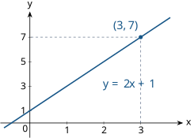
반환형 · 함수 이름 · 매개변수 · 함수 본문 · 반환문
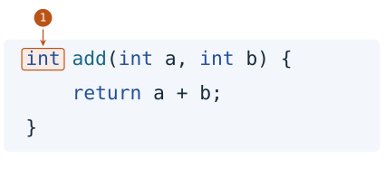
int.add가 계산한 결과를 정수형 값으로 반환함.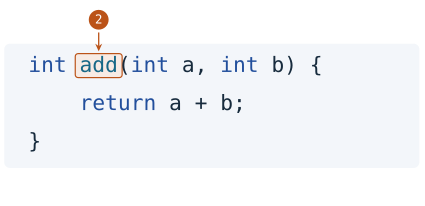
add.add(3, 4) 형태로 호출.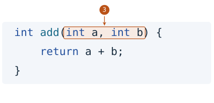
int a, int b처럼 각 매개변수의 자료형과 이름 작성.add(3, 4) 호출 시 a에 3, b에 4가 전달됨.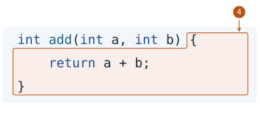
{ }로 감싼 실행 코드.return a + b;로 계산과 반환 수행.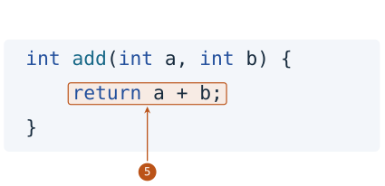
return a + b;는 합을 계산하여 반환하고 함수 실행 종료.add(3, 4) 호출의 반환값은 7.본문을 앞에 작성 · 원형을 먼저 선언 · 호출 전에 형식 알리기
#include <stdio.h>
int add(int a, int b) {
return a + b;
}
int main(void) {
int sum = add(3, 4);
printf("%d\n", sum);
return 0;
}
add의 본문을 main보다 앞에 작성.#include <stdio.h>
int main(void) {
int sum = add(3, 4);
printf("%d\n", sum);
return 0;
}
int add(int a, int b) {
return a + b;
}
add의 선언이 없는 상태.#include <stdio.h>
int add(int a, int b);
int main(void) {
int sum = add(3, 4);
printf("%d\n", sum);
return 0;
}
int add(int a, int b) {
return a + b;
}
int add(int a, int b);처럼 본문 없이 ;로 끝냄.main 뒤에 작성해도 호출 전에 형식을 알 수 있음.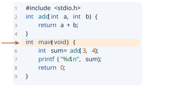
main 앞에 작성한 첫 번째 배치의 실행 과정 확인.main에서 시작함.add는 아직 실행되지 않음. 호출할 때 실행됨.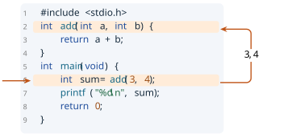
int sum = add(3, 4);의 오른쪽 함수 호출을 먼저 실행.3, 4를 전달하여 add로 이동. sum 초기화는 반환까지 대기.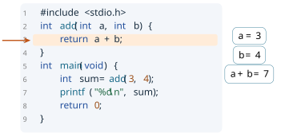
a, b에 각각 3, 4가 저장됨.a + b를 계산하여 결과 7을 얻음.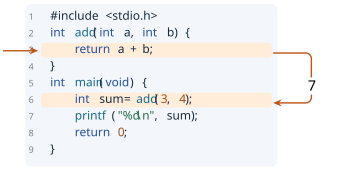
return a + b;로 계산 결과 7 반환.add 실행을 마치고 호출한 식의 위치로 복귀.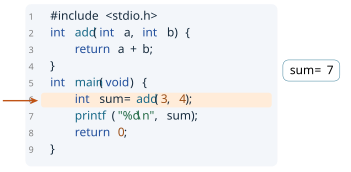
add(3, 4)가 반환한 7로 sum 초기화.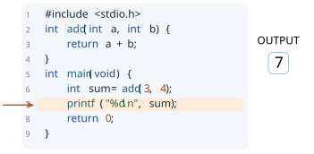
printf로 sum의 값 7 출력.return 0;을 실행하여 main 종료.실행 결과가 여기에 표시됩니다.
실행 결과가 여기에 표시됩니다.
실행 결과가 여기에 표시됩니다.
실행 결과가 여기에 표시됩니다.
실행 결과가 여기에 표시됩니다.
float divide(float a, float b) {
return a / b;
}
a, b: float형 값 두 개 전달.float: 나눗셈 결과를 float형으로 반환.divide(7.0f, 2.0f) 호출 시 3.5f 반환.b는 0이 아닌 값 사용.divide: float 값 두 개를 받아 나눗셈 결과를 float로 반환.main 앞, 정의는 main 뒤에 직접 작성.main에서 호출하고 반환값을 소수점 아래 두 자리까지 출력.b는 0이 아닌 값 사용.7.0f, 2.0f 입력 → 3.50 출력.실행 결과가 여기에 표시됩니다.
float divide(int a, int b) {
return (float)a / b;
}
a, b: int형 정수 두 개 전달.float: 소수 부분을 포함한 결과 반환.divide(7, 2) 호출 시 3.5f 반환. b는 0이 아닌 값 사용.divide: int형 정수 두 개를 받아 결과를 float로 반환.main에서 호출.b는 0이 아닌 값 사용.7, 2 입력 → 3.50 출력.실행 결과가 여기에 표시됩니다.
#include <stdio.h>
char grade(int score) {
if (score >= 90) return 'A';
if (score >= 80) return 'B';
if (score >= 70) return 'C';
if (score >= 60) return 'D';
return 'F';
}
int main(void) {
printf("%c\n", grade(85));
return 0;
}
int형 점수를 받아 char형 등급 반환. 점수는 0~100 범위 사용.grade(85)의 반환값은 'B'. %c로 출력한 결과: B.grade: int형 점수를 받아 char형 등급 반환.if문으로 등급을 판정하고 반환. 점수 범위는 0~100.main에서 호출한 뒤 반환된 문자를 출력.85 입력 → B 출력. 95, 55로 바꾸어 추가 확인.실행 결과가 여기에 표시됩니다.
#include <stdio.h>
int get_number(void) {
return 10;
}
int main(void) {
int value = get_number();
printf("%d\n", value);
return 0;
}
(void): 호출할 때 전달하는 인자 없음.get_number()처럼 괄호 안을 비워 호출.10.get_number: 입력 인자 없이 정수 10을 반환하는 함수 작성.main에서 인자 없이 호출하고 반환값을 변수에 저장.10 출력.실행 결과가 여기에 표시됩니다.
#include <stdio.h>
void show_grade(char value) {
printf("%c\n", value);
}
int main(void) {
show_grade('B');
return 0;
}
void: 호출한 곳으로 돌려주는 반환값 없음.show_grade('B')를 호출하여 문자 B를 화면에 표시.show_grade: char형 문자를 받아 화면에 표시하는 함수 작성.main에서 문자 변수를 인자로 전달하여 호출.'B' 전달 → B 표시. 화면 표시와 반환값 구분.실행 결과가 여기에 표시됩니다.
이름을 사용할 수 있는 범위 · 저장 공간이 유지되는 시간
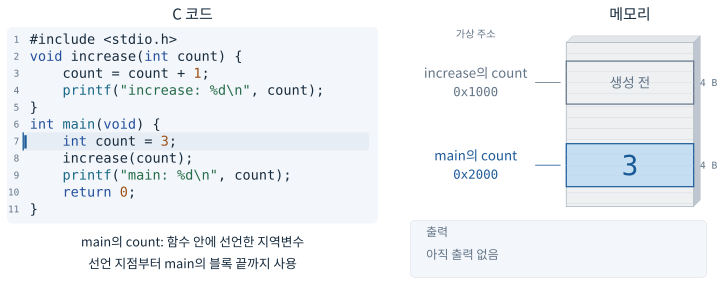
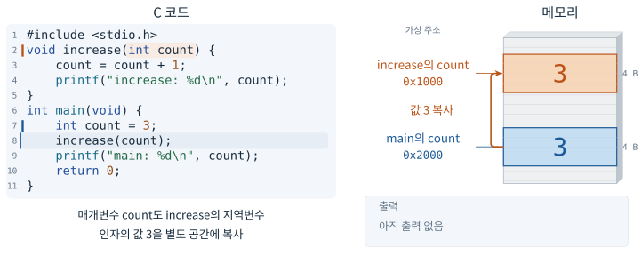
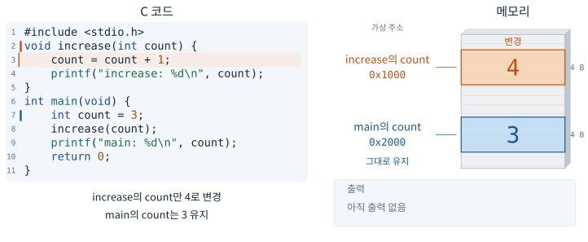
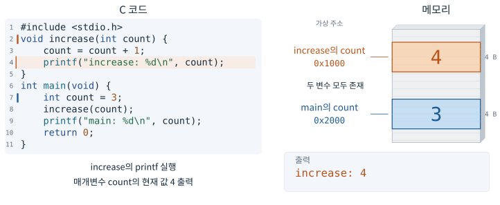
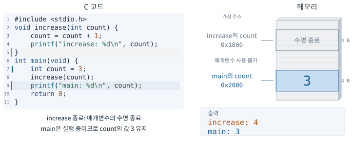
실행 결과가 여기에 표시됩니다.
실행 결과가 여기에 표시됩니다.
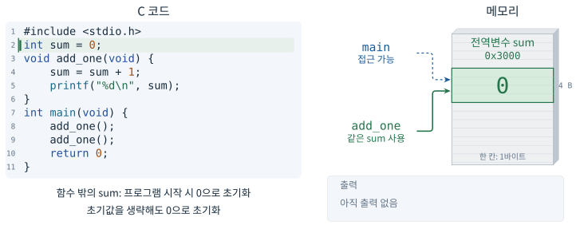
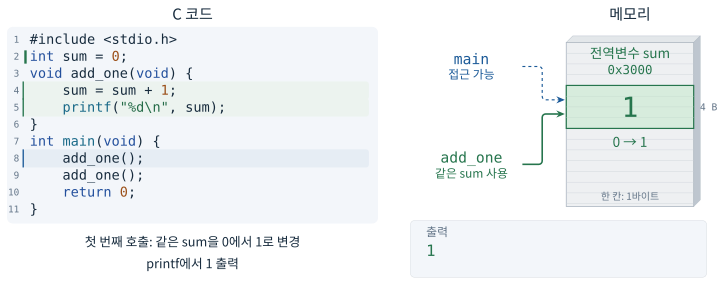
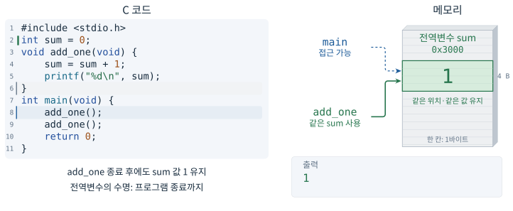
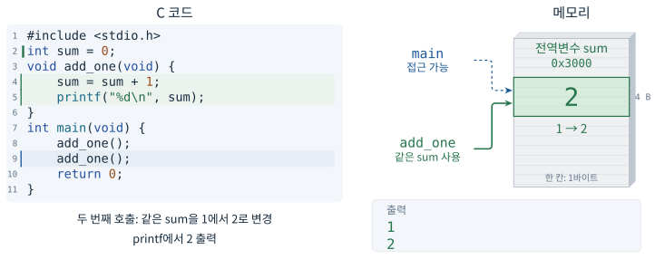
실행 결과가 여기에 표시됩니다.
실행 결과가 여기에 표시됩니다.
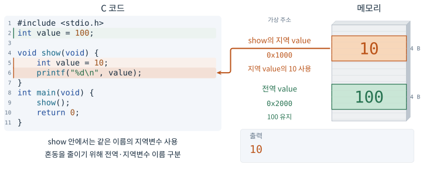
| 개념 | 기억할 내용 |
|---|---|
| 함수의 기본 형태 | 반환형 · 함수 이름 · 매개변수 · 중괄호로 감싼 본문으로 구성 |
| 선언과 호출 | 호출 전에 함수 원형을 선언하거나 함수 본문을 먼저 정의 |
| 실행 순서 | 함수 호출 → 본문 실행 → 호출한 곳으로 복귀. 반환값은 return으로 전달 |
| 입력과 반환 | int·float·char 등 자료형 선택. 입력이 없으면 (void), 반환값이 없으면 반환형 void |
| 값 복사 | 인자의 값이 매개변수에 복사됨. 매개변수를 바꾸어도 호출한 쪽 변수의 값은 유지 |
| 지역변수 | 함수·블록의 해당 범위에서 사용. 매개변수도 지역변수 |
| 전역변수 | 함수 밖에 선언. 선언이 보이는 함수들에서 공유하며, 함수 호출 후에도 값 유지 |
| 이름 중복 | 같은 이름의 지역변수가 있으면 해당 범위에서 전역변수가 가려짐 |